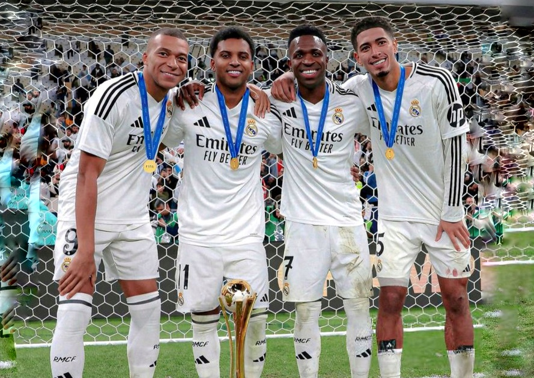
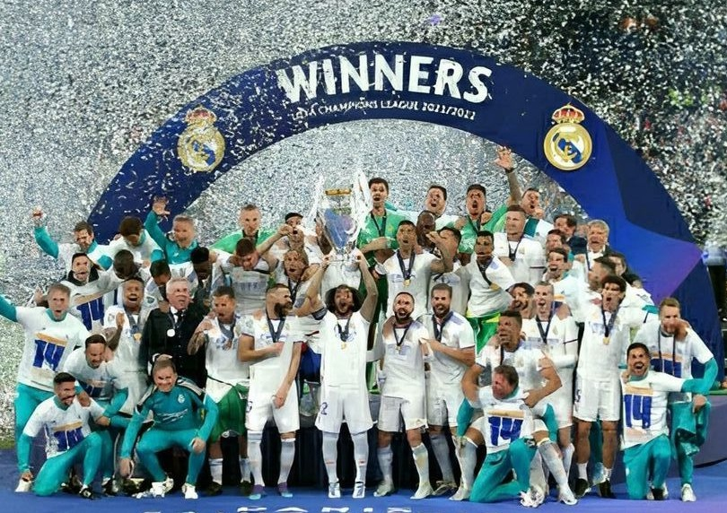
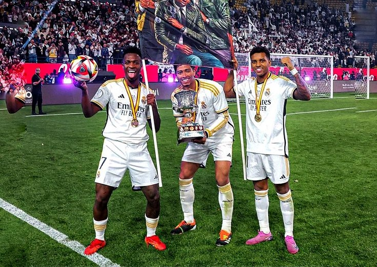
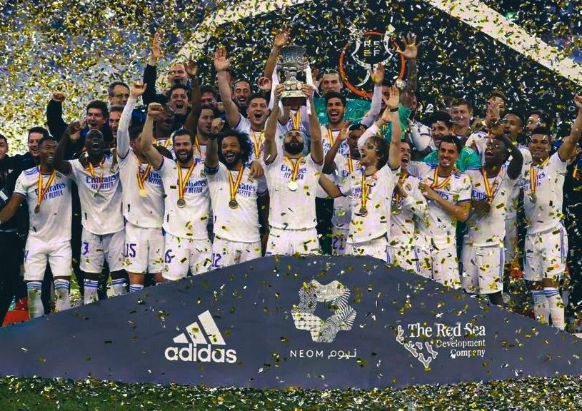

Real Madrid CF

Real Madrid CF is one of the most iconic and successful football clubs in the world, known for its rich history, legendary players, and unmatched achievements. Founded in 1902, the club has built a global fanbase and continues to dominate European football with its passion, excellence, and winning mentality.
The current squad of Real Madrid CF features a perfect blend of experienced leaders and young talents. With stars like Kylian mbappe , Jude Bellingham, Vinícius Júnior, Rodrygo, and valverde the team continues to compete at the highest level under world-class management.


| Competition | Titles |
|---|---|
| Champions League | 14 |
| La Liga | 35 |
| Copa del Rey | 20 |
| Supercopa | 13 |
CRISTIANO RONALDO represents one of the greatest eras in the history of Real Madrid CF. During his time at the club, he became the all-time top scorer and played a key role in leading the team to multiple UEFA Champions League victories. His dedication, passion, and unmatched work ethic perfectly reflect the spirit of Real Madrid—relentless, ambitious, and always striving for greatness. Even after his departure, his legacy continues to inspire millions of fans around the world, symbolizing excellence, determination, and the true meaning of wearing the white jersey.
Explore unforgettable moments from the journey of Real Madrid CF—from historic victories to legendary players and iconic celebrations. This gallery captures the spirit and pride of the club.




